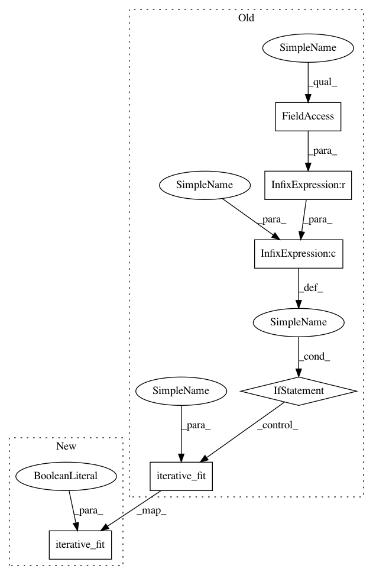

89f3201a37d309d20fea44dcde6f05950f3d8a28,autosklearn/pipeline/components/classification/gradient_boosting.py,GradientBoostingClassifier,fit,#GradientBoostingClassifier#Any#Any#Any#Any#,34
Before Change
self.fully_fit_ = False
def fit(self, X, y, sample_weight=None, refit=False):
if self.estimator is None or refit:
self.iterative_fit(X, y, n_iter=1, sample_weight=sample_weight,
refit=refit)
while not self.configuration_fully_fitted():
self.iterative_fit(X, y, n_iter=1, sample_weight=sample_weight)
return self
After Change
self.fully_fit_ = False
def fit(self, X, y, sample_weight=None, refit=False):
self.iterative_fit(X, y, n_iter=1, sample_weight=sample_weight,
refit=True)
while not self.configuration_fully_fitted():
self.iterative_fit(X, y, n_iter=1, sample_weight=sample_weight)
return self
In pattern: SUPERPATTERN
Frequency: 3
Non-data size: 6
Instances
Project Name: automl/auto-sklearn
Commit Name: 89f3201a37d309d20fea44dcde6f05950f3d8a28
Time: 2017-04-26
Author: feurerm@informatik.uni-freiburg.de
File Name: autosklearn/pipeline/components/classification/gradient_boosting.py
Class Name: GradientBoostingClassifier
Method Name: fit
Project Name: automl/auto-sklearn
Commit Name: 89f3201a37d309d20fea44dcde6f05950f3d8a28
Time: 2017-04-26
Author: feurerm@informatik.uni-freiburg.de
File Name: autosklearn/pipeline/components/classification/random_forest.py
Class Name: RandomForest
Method Name: fit
Project Name: automl/auto-sklearn
Commit Name: 89f3201a37d309d20fea44dcde6f05950f3d8a28
Time: 2017-04-26
Author: feurerm@informatik.uni-freiburg.de
File Name: autosklearn/pipeline/components/regression/gradient_boosting.py
Class Name: GradientBoosting
Method Name: fit